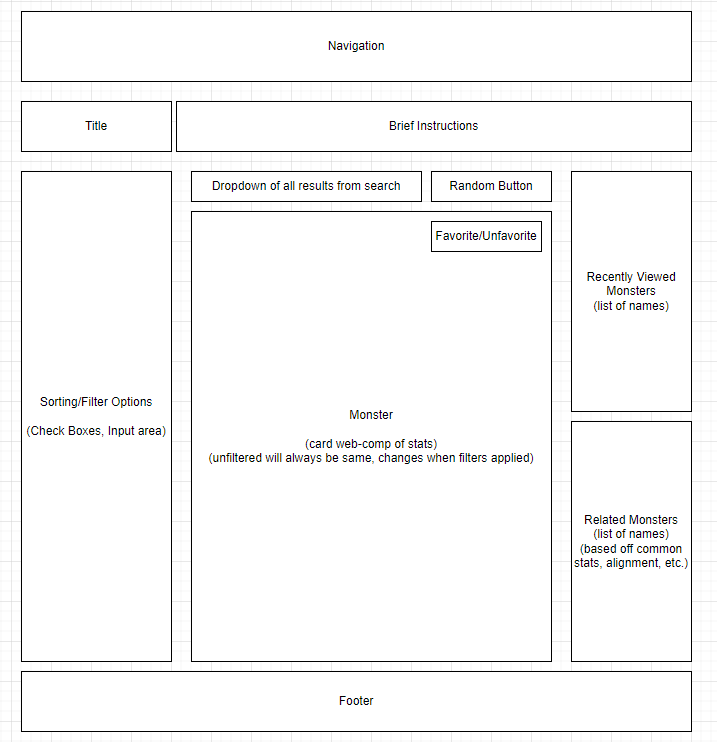

Documentation
Information about the project
Project Requirements
Resources
API
Major Features
- Allows user to search up monsters within the 5th Edition D&D API
- Favorite monsters so they can be referenced quickly
- Mobile Friendly
- UI changes when on a mobile device
- App state carries over to mobile UI when user changes size of desktop browser to mobile size (768px)
- localStorage is utilized to store favorite monsters, recently clicked on monsters, and app state
- User can filter their search results and change the order of how they appear
- Searches with more than 20 results are broken up into multiple pages that the player can traverse
- Code is broken up for ES6 Modules
- User can unfavorite individual items as well as completely clear their list of favorites
- Favorites are displayed so the most recent favorited item is first
- Community page allows players to view the most favorited monsters based on all users
- Community page cards dynamically change when users favorite/unfavorite cards
Grading
- Project Requirements
- Ajax via fetch is utilized on the App page
- Favoriting system is utilized in App, Favorites, and Community pages and utilizes localStorage
- Firebase is utilized in App, Favorites, and Community pages
- Embedded font
- HTML and CSS is validated for all pages
- Every page uses at least three web components. One of them being a navigation bar
- App page has a custom card web component
- Favorites page has a delete button that clears all of the user's favorites
- State of App page UI is preserved
- App page provides user with at least three controls
- Above and Beyond
- User can favorite and unfavorite individual results on App, Favorites, and Commmunity pages
- User is given more than three controls to utilize
- App UI changes on mobile browser to look neater on mobile devices
- A "Full Info" web component was created to allow the user to view more info on a specific monster
- Recently viewed cards are saved in localStorage so the user can quickly go back to look at them again
- Community page cards dynamically change when users favorite/unfavorite cards
To Do
- More filters and ways to order results
- Add more information in "Full Info" web component (ie. resistances, immunities)

Documentation